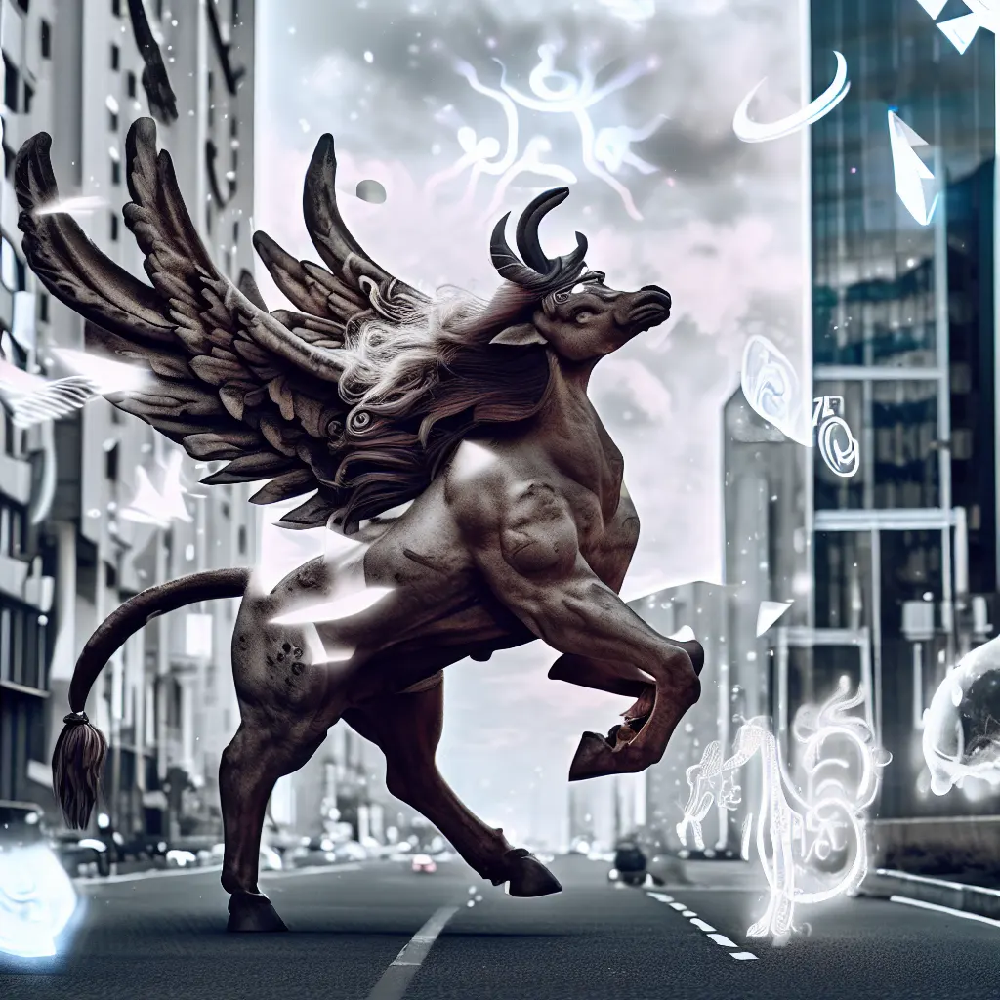

<app-contain class="textContain">
    <div class="loreContain">

        <div  class="loreText" *ngIf="currentPage === 1">
            <h1>Les Légendes Éveillées : <br>
                Une Nouvelle Ère dans la Cité</h1>


            <p> Depuis la nuit des temps, les créatures mythiques avaient vécu dans les recoins les plus secrets de
                notre imagination, des êtres issus de contes et de légendes. Pourtant, le jour où les portes entre
                leurs
                mondes et le nôtre se sont ouvertes, tout a changé.</p>
            <p>C'était une nuit étoilée comme tant d'autres, lorsque soudain, un éclat de lumière émeraude illumina
                le
                ciel. Les étoiles semblaient s'aligner, créant un portail entre les univers. Des êtres fantastiques
                émergèrent des ombres, s'adaptant aux rues pavées et aux gratte-ciels, transformant la cité en une
                toile
                vivante de mythes et de mystères.</p>
        </div>


        <div class="loreText" *ngIf="currentPage === 2">
            <p> Les sirènes, autrefois confinées aux profondeurs océaniques, s'installèrent dans les canaux
                souterrains, chantant doucement leurs mélodies envoûtantes. Les elfes, jadis cachés dans les bois,
                découvrirent de nouvelles capacités pour la finance et la justice des hommes, tandis que les
                licornes trouvèrent refuge parmi les recoins verdoyants des parcs urbains, faisant pousser des
                jardins enchantés dans les interstices entre les bâtiments.</p>
            <p> Les minotaures, dont les labyrinthes étaient légendaires, furent attirés par les dédales du métro,
                devenant le principal danger des passages souterrains. Les dragons, quant à eux, embrasaient les
                villes selon leur bon vouloir, et il était difficile de les arrêter.</p>
        </div>


        <div class="loreText" *ngIf="currentPage === 3">
            <p> Mais ce n'était pas seulement leur présence qui captivait les citoyens. Certaines de ces créatures
                collaborèrent avec les humains pour des transformations biomécaniques, apportant leurs connaissances
                uniques à des projets de sécurité et de défense. Les harpyes se lièrent aux drones de surveillance,
                offrant une vue aérienne inégalée pour protéger la cité. Les fées utilisèrent leur intérêt pour la
                lumière pour des dispositifs de luminosité urbaine.</p>
            <p>
                Cette collaboration entre les êtres mythiques et les humains permit de transformer la cité en un
                lieu non seulement magique, mais aussi sécurisé. Les frontières entre les mondes cédèrent, mais les
                légendes se révélèrent être des alliées inestimables dans la préservation de notre monde moderne.
            </p>
        </div>


        <div class="loreText" *ngIf="currentPage === 4">
            <p> Quelle que soit la raison, une nouvelle ère avait commencé.
                Les rues de la cité scintillaient désormais de magie et d'inspiration, où les créatures mythiques se
                fondaient dans le rythme de la vie moderne. </p>
            <p>
                Chaque coin de rue devenait une opportunité pour une rencontre inattendue avec une créature
                légendaire, où les mythes et la réalité entrelaçaient leurs histoires dans une harmonie unique.</p>
                
        </div>


        <div class="paginationButtons">
            <a (click)="prevPage()" [ngClass]="{'disabled': currentPage === 1}">
                
            </a>
            <div class="paginationIndicator">
                <p *ngIf="currentPage === 1">page 1</p>
                <p *ngIf="currentPage === 2">page 2</p>
                <p *ngIf="currentPage === 3">page 3</p>
                <p *ngIf="currentPage === 4">page 4</p>
            </div>

            <a (click)="nextPage()" [ngClass]="{'disabled': currentPage === 4}">
                
            </a>
        </div>

    </div>
</app-contain>